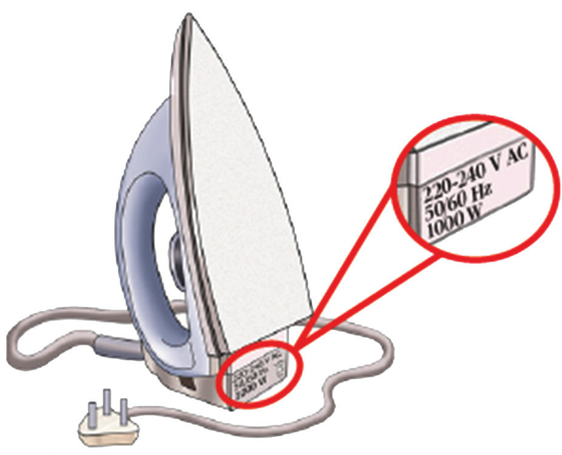

Electric power
In many circuits, it is essential to know the rate at which electrical energy is transferred into other forms of energy. The rate of doing work or the rate at which energy is dissipated is called power.
By Ohm’s law,
Therefore,
Using,
The SI unit of power is joule per second ( Js−1 ) or watt (W). The power is assumed to be 1 watt if 1 ampere current flows against a potential difference of 1 volt, that 1 watt = 1 ampere × 1 volt. Likewise, if 1 joule of energy is being spent per second, the power consumed by an electrical appliance is said to be 1 watt (1 watt = 1 joule/second).
Example 2.15
If a lamp on a 240 V supply draws a current of 0.25 A, calculate the power the lamp uses to transfer electrical energy into heat and light energy.
Solution
Power rating of electrical appliances
Every electrical appliance should carry a label stating the potential difference for which it has been designed and the power an appliance can convert when operating at the stated potential difference. The rate at which an appliance dissipates energy is called the rating of an appliance and is usually marked on the body of an appliance. For example, an appliance marked 3000 W, 240 V, dissipates energy at the rate of 3000 joules per second when connected to a 240 V supply. Figure 2.38 shows an electric iron marked 220 - 240 V, 1000 W, indicating that, the appliance dissipates energy at the rate of 1000 joules per second when connected to a 220 - 240 V supply.
It is worth noting that, if the appliance is connected to a higher voltage than the one indicated, it may be damaged, and if connected to a lower voltage it will not function properly.
